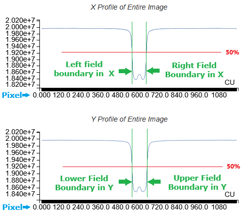

This document describes the processing steps that are taken in calculating WinLutz360 results.
WinLutz360 is a complete re-implementation of Winston Lutz that has the added capability to handle non-cardinal collimator angles (e.g. 37.29164 degrees).
It uses the same processing regardless of the collimator angle. There is no 'special case' handling for cardinal angles. The collimator angle used for processing is extracted from the RTIMAGE file. Usually this deviates slightly from the planned angle. For example, the plan may specify 90 degrees, but the RTIMAGE reports 90.02 degrees. In this case WinLutz360 uses the 90.02 value.
WinLutz360 supports:
Bicubic Edge Interpolation
This step produces a very coarse approximation of the field and ball.
Profiles of the entire image are calculated in the X and Y direction. The highest and lowest values are used to calculate the 50% point of each profile, as shown by the red lines in the image.
Next, the intersections of the 50% points and the profile are found, which establishes the left, right, lower, and upper bounds of the field. These four values define a rectangle, the center of which is used as the coarse location.
The following is an example of those profiles for an image with collimator angle 270 degrees. The small 'bump' in the center is caused by the ball.

The images below show the coarse field measurements with a yellow border around each. The border has been expanded by the estimated penumbra thickness to better illustrate the result.
The approximate location provides only provides the center of the field. At this point we still don't know how far the edges are from the center. This is especially obvious for non-cardinal collimator angles.